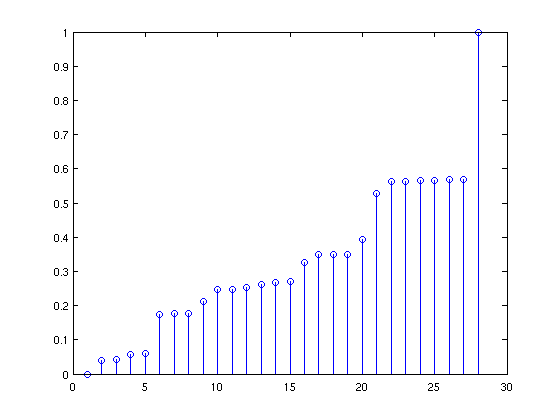

Contents
Matrice de transition
clear all close all load('bigramenglish.mat'); eval('correspondance'); [a,n] = max(matrice_trans(1,:)); lettre1 = corresp{n,2} [c,m] = max(matrice_trans(n,:)); lettre1p = corresp{m,2} % On remarque que le mot le plus probable pour commecer une phrase en %anglais est "the" [b,n1] = max(matrice_trans(:,28)); lettre2 = corresp{n1,2};
lettre1 = t lettre1p = h
Générer un mot
etat = 1; word = []; while (etat < 27) lettre = corresp{etat,2}; u = rand; p = cumsum(matrice_trans(etat,:)); for i = 1:28 if u > p(i) && u < p(i+1) etat = i; end end word = [word,lettre]; end stem(p); word % la fonction de répartition cumsum permet d'avoir une échelle pour localiser % l'état
word = s
Reconnaissance de langage
To be or not to be
Vraisemblance_en = matrice_trans(1,21)*matrice_trans(21,16)*matrice_trans(16,28)*matrice_trans(1,3)*matrice_trans(3,6)*matrice_trans(6,28)*matrice_trans(1,16)*matrice_trans(16,19)*matrice_trans(19,28)*matrice_trans(1,15)*matrice_trans(15,16)*matrice_trans(16,21)*matrice_trans(21,28)*matrice_trans(1,21)*matrice_trans(21,16)*matrice_trans(16,28)*matrice_trans(1,3)*matrice_trans(3,6)*matrice_trans(6,28) load('bigramfrancais.mat'); eval('correspondance'); % Etre ou ne pas etre Vraisemblance_fr = matrice_trans(1,6)*matrice_trans(6,21)*matrice_trans(21,19)*matrice_trans(19,6)*matrice_trans(6,28)*matrice_trans(1,16)*matrice_trans(16,22)*matrice_trans(22,28)*matrice_trans(1,15)*matrice_trans(15,6)*matrice_trans(6,28)*matrice_trans(1,17)*matrice_trans(17,2)*matrice_trans(2,20)*matrice_trans(20,28)*matrice_trans(1,6)*matrice_trans(6,21)*matrice_trans(21,19)*matrice_trans(19,6)*matrice_trans(6,28)
Vraisemblance_en = 1.3739e-18 Vraisemblance_fr = 1.7462e-18